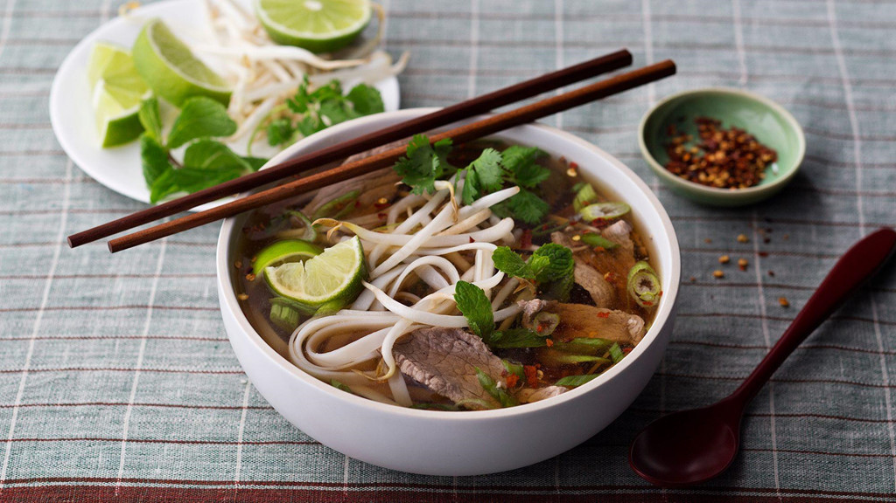
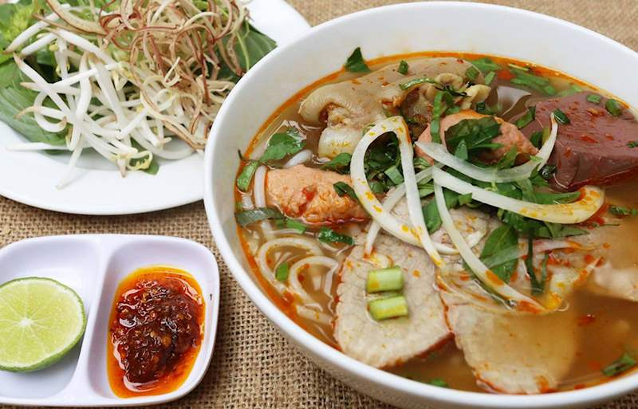

Hành trình du ngoạn của phở Việt khắp mọi châu lục trên thế giới
Theo Tri thức Trẻ, Aug 17, 2018
Nhắc đến Việt Nam, du khách nước ngoài có thể đọc rõ ràng từ "Phở" để miêu tả cho sự đặc sắc của hương vị truyền thống nước ta. Và ở chiều ngược lại, chính phở lại là món ăn góp phần tôn vinh văn hóa ẩm thực quê nhà. Giờ đây, phở không chỉ xuất hiện trên các trang báo cùng với những lời khen ngợi, hay nằm trong top các món ăn ngon phải thử được vinh danh hằng năm mà chúng đã "chu du" đến nhiều vùng đất mới. Nhẩm tính ra, nếu cấp visa du lịch cho phở thì chắc cũng chi chít dấu mốc của khắp các nước ở mọi châu lục rồi đấy. Hãy khám phá món phở Việt ở nước ngoài đã tạo dấu ấn cho thực khách như thế nào nhé!
Mỗi miền tổ quốc Việt Nam đều có một vài món bún nức tiếng, dành cả thanh xuân chắc cũng chưa ăn được hết
Theo Tri thức Trẻ, May 22, 2019
Là một nước có truyền thống lúa nước hàng nghìn năm tuổi, Việt Nam là môi trường phát triển hoàn hảo cho các món ăn làm từ gạo và ngược lại, các món làm từ gạo cũng góp phần làm nên tinh hoa ẩm thực Việt. Một ví dụ trong số đó là món bún. Bún – chỉ một chữ nhưng lại gói gọn cả trăm đầu món ăn. Chỉ một món dạng sợi làm từ gạo tẻ lại làm nên hẳn một "đế chế" với nhiều thể loại khác nhau. Dường như mỗi vùng, mỗi miền đều có một món bún mang theo đặc trưng của con người, thổ nhưỡng nơi đó. Hãy cùng chúng mình khám phá một loạt những cái tên nổi danh theo từng vùng miền tổ quốc nhé. Các món bún Việt Nam có nhiều loại đến mức, dành cả thanh xuân cũng chưa dám "vỗ ngực" rằng mình đã thử hết:
Về chúng tôi
Xem thêm bài viết tại đây
Cách làm món bún chả Hà Nội chuẩn ngon "đến từng chi tiết" !
Cách làm món bún chả Hà Nội chuẩn ngon "đến từng chi tiết" !
Cách làm món bún chả Hà Nội chuẩn ngon "đến từng chi tiết" !
Ý kiến & Phản hồi
Hãy liên hệ với chúng tôi